Click on text to jump to..
Calculation can be selected through the tabs in the left panel or through the Calculate option in the menu
Equivalent Air Depth is calculated on mixtures of gas that contain more than the normal 21 % oxygen. Current range for the oxygen percentage of the gas is 22-50%, Inputs into the application are Oxygen Percentage (Fg) and Depth (m)
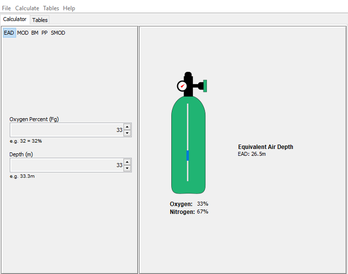The range for Oxygen Percentage is between 22 and 50 percent. The input is selected through the use of the up and down buttons to the right of the value. It is incremented per percentage point.
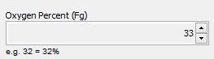The current range is between 0-100 metres. The input is selected through the up and down buttons to the right of the value. It is incremented per 1 metre.

The results are presented on the right panel in metres for the Equivalent Air Depth and shows the percentage of oxygen for the O2 cylinder.
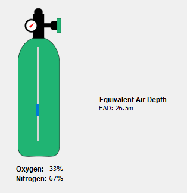In situations where the inputs can cause harm a warning will display
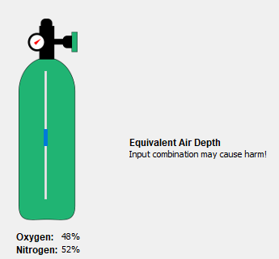Maximum Operating Depth is the depth of the dive that can be undertaken based on the partial pressure of gas. Inputs for the application are Partial Pressure and Oxygen Percentage.
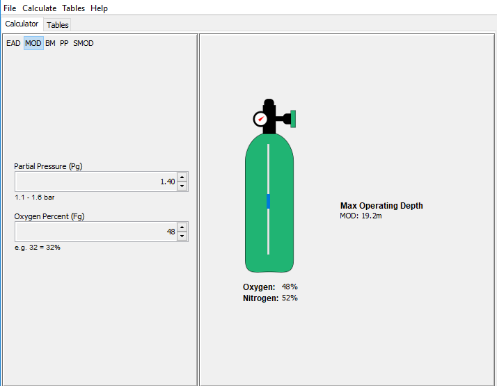The range for the Partial Pressure is between 1.10 to 1.60 bars. The input is selected through the up and down buttons to the right of the value. It is incremented per 0.01 Pg.
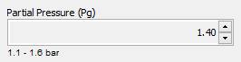The range for Oxygen Percentage is between 22 and 50 percent. Th input is selected through the use of the up and down buttons to the right of the value. It is incremented per percentage point.

The results are presented on the right panel in metres for the maximum operating depth and shows the percentage of oxygen for the O2 cylinder.
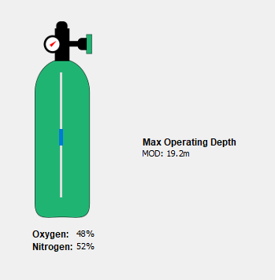Best Mix calculates what ratio of oxygen is best for a particular depth. Inputs for the application are Partial Pressure and Depth.
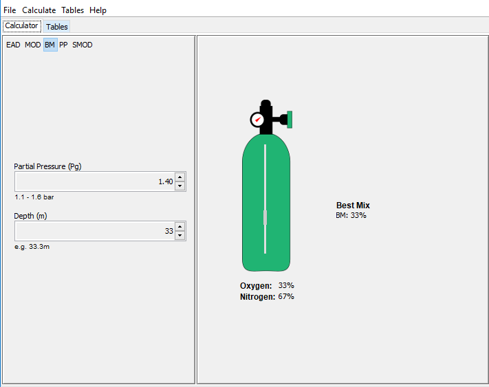The range for the Partial Pressure is between 1.10 to 1.60 bars. The input is selected through the up and down buttons to the right of the value. It is incremented per 0.01 Pg.
The current range is between 0-100 metres. The input is selected through the up and down buttons to the right of the value. It is incremented per 1 metre.

The results are presented on the right panel in percentage of oxygen for the Best Mix and the O2 cylinder.
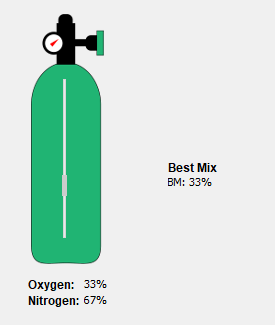In situations where the inputs can cause harm a warning will display.
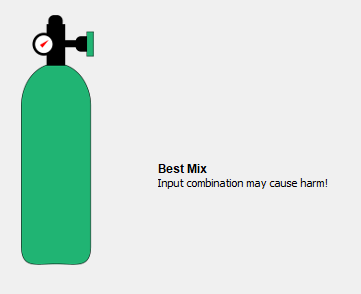Partial Pressure calculates what the pressure of the oxygen should be based on the Oxygen percentage and the depth of the dive. Inputs for the application are Oxygen Percentage and Depth.
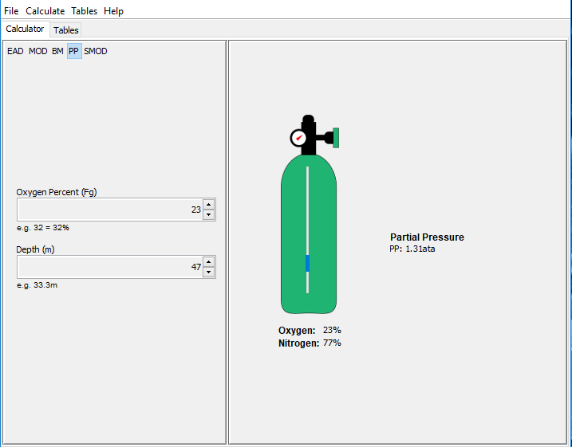The range for Oxygen Percentage is between 22 and 50 percent. Th input is selected through the use of the up and down buttons to the right of the value. It is incremented per percentage point.

The current range is between 0-100 metres. The input is selected through the up and down buttons to the right of the value. It is incremented per 1 metre.
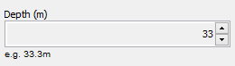The results are presented on the right panel for the pressure in ata and shows the percentage of oxygen for the O2 cylinder.
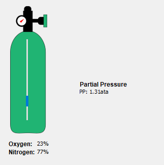In situations where the inputs can cause harm a warning will display
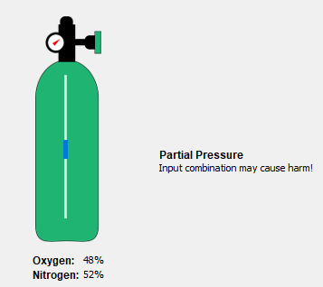Maximum Operating Depth is the depth of the dive that can be undertaken based on the partial pressure of gas. Standard Maximum Operating Depth has the Partial Pressure fixed at 1.4Pg. Input for the application is Oxygen Percentage
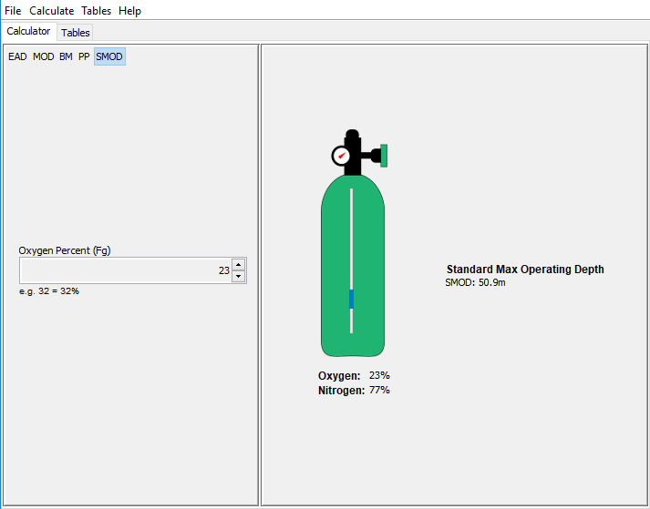The range for Oxygen Percentage is between 22 and 50 percent. Th input is selected through the use of the up and down buttons to the right of the value. It is incremented per percentage point.
Click on calculate for the results to be presented for the maximum operating depth in metres and shows the percentage of oxygen for the O2 cylinder.
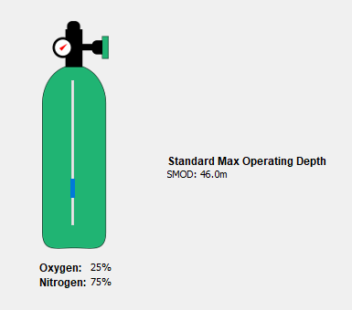The tables can be accessed through the menu under tables and through the tables tab under the menu.
Equivalent Air Depth is calculated on mixtures of gas that contain more than the normal 21 % oxygen. Current range for the oxygen percentage of the gas is 22-50%, Inputs into the application are Oxygen Percentage (Fg) and Depth (m)
Minimum range of oxygen percentage is 18%.
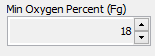Maximum range of oxygen percentage is 50%
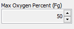Minimum range of depth is 3 metres
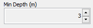Maximum range of depth is 69 metres.
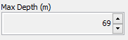Partial Pressure calculates what the pressure of the oxygen should be based on the Oxygen percentage and the depth of the dive. Inputs for the application are Oxygen Percentage and Depth
Minimum range of oxygen percentage is 18%.
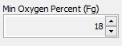Maximum range of oxygen percentage is 50%.
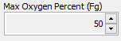Minimum range of depth is 3 metres
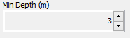Maximum range of depth is 69 metres
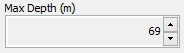